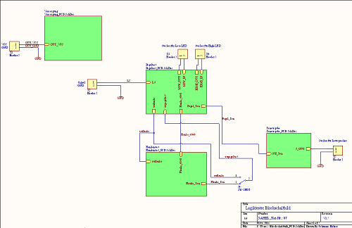
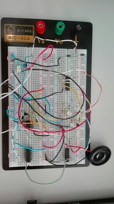
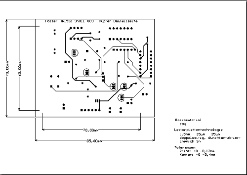

Die Vorgangsweise
Es wurde das Grundprinzip des Gerätes konzipiert und im Programm Altium Designer wurde die Schaltung nach Normen gezeichnet und von den Projektbetreuern überprüft.
Zur selben Zeit wurde der Logiktester auf einem Steckbrett aufgebaut und die Schaltungsidee finalisiert.
Danach wurde ein Layout für die Printplatte angefertigt, die ebenfalls im Altium Designer erstellt wurde.
Nach der Fertigung wurde die Printplatte bestückt und der Logiktester wurde auf seine Funktionalität überprüft.
Anfang Juni 2016 wurden die Endgeräte von den Professoren abgenommen und bewertet.